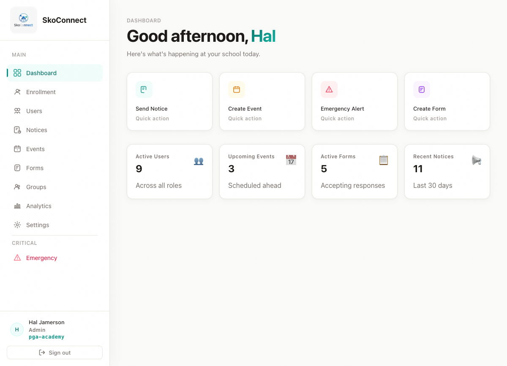
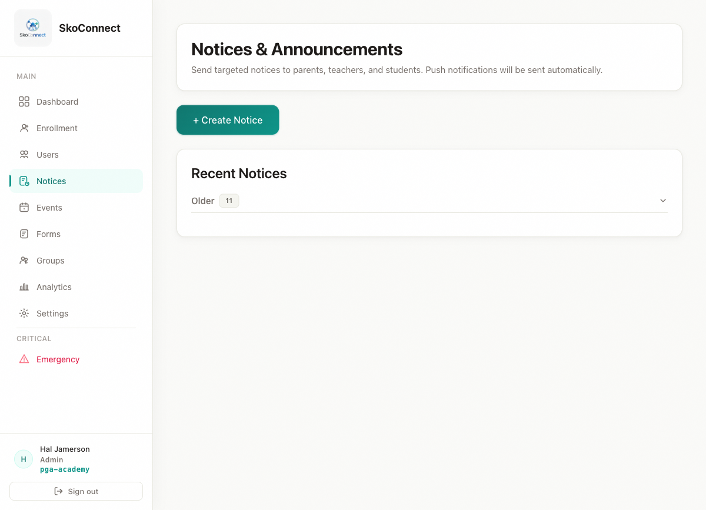
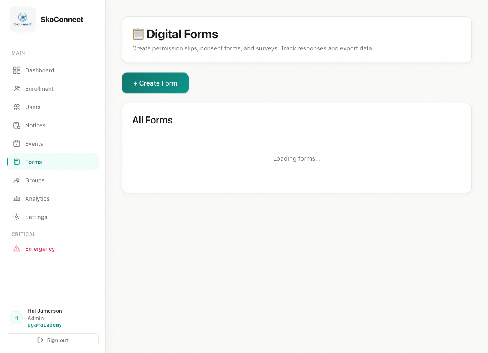

2026-08-03
SkoConnect Documentation v1.1 | Last updated: 2026-08-03
This guide is the comprehensive reference for everything you can do as a teacher or staff member in SkoConnect. It covers the admin portal (web) and the mobile app.
As a teacher or staff member, your primary role is creating content — notices, events, and forms — that keeps families informed and engaged. Here’s what you can and cannot do:
| You CAN Do | You CANNOT Do |
|---|---|
| Create, edit, and delete notices | Manage users or create accounts |
| Create, edit, and delete events | Run enrollment or CSV uploads |
| Create, edit, and delete forms | Send emergency broadcasts |
| Create and manage groups | Access analytics or school settings |
| View the user directory | View other teachers’ private data |
| Use the mobile app on the go |
Note: Teachers and staff have the same permissions. The term “staff” refers to non-teaching school employees like administrators, counselors, and support staff who need to create content.
Each section below is self-contained — jump to any section without reading the whole guide.
After logging in to the admin portal, you’ll see your Dashboard. This gives you a quick snapshot of what’s happening at your school:
The sidebar on the left is your main navigation. You’ll primarily use these sections:

Notices are the primary way to communicate with families. As a teacher, you’ll likely send notices for homework reminders, exam schedules, field trip details, and classroom updates.
Click Notices in the left sidebar
Click Create Notice in the top-right corner
Fill in the notice details:
Title — Write a clear, specific subject line. Families scan notice titles, so make it descriptive:
Description — Write your full message. Keep it focused on one topic per notice.
Target Audience — Choose who should see the notice:
Category — Assign a category for color coding:
| Category | When to Use |
|---|---|
| School Announcement | General classroom or school news |
| Alert | Important but non-emergency warnings |
| Holiday | Holiday-related announcements |
Optionally, attach an image (e.g., a flyer or worksheet image)
Click Send
The notice appears instantly in the mobile app for everyone in your target audience.
Tip: If you sent a notice with incorrect information, edit it rather than deleting it. This preserves the notice history and prevents confusion if someone already read the original.
Tip: Write notice titles like newspaper headlines — short and specific. Families decide whether to read a notice based on its title.

Events appear on families’ calendars in the mobile app. Use events for anything with a specific date and time — parent-teacher conferences, field trips, exam days, assemblies.
Click Events in the left sidebar
Click Create Event
Fill in the event details:
Title — The event name (e.g., “Grade 4 Parent-Teacher Conference”)
Description — Additional details about the event
Date, Start Time, End Time — When the event takes place
Location — Where the event happens (e.g., “School Auditorium” or “Room 201”)
All School — Toggle on to make the event visible to the entire school. Toggle off to target a specific audience.
Target Audience — If not all-school, select specific roles and/or grades
Under Reminders, choose when to notify attendees:
| Option | Best For |
|---|---|
| 5 minutes before | Short meetings, quick reminders |
| 1 hour before | Events, assemblies, conferences |
| 1 day before | Important dates, deadlines, trips |
Click Create Event
Families will see this event on their calendar and receive a reminder notification at the time you selected.
Note: If you change the date or time of an event after creating it, the reminder notifications will be sent based on the new time.
Digital forms replace paper handouts. Parents and students fill them out on their phones, and you can see who has and hasn’t responded.
Click Forms in the left sidebar
Click Create Form
Enter a Form Title (e.g., “Grade 6 Field Trip Permission Slip”)
Click Add Field to add questions. Choose from these field types:
| Field Type | Use For | Example |
|---|---|---|
| Text | Short answers | Student name, class, teacher |
| Email addresses | Parent email, alternate contact | |
| Checkbox | Yes/no or agreement | “I grant permission for my child to attend” |
| Dropdown | Multiple choice from a list | Shirt size, bus route, lunch preference |
| Textarea | Long answers | Comments, medical notes, special instructions |
| Date | Calendar date selection | Birth date, event date, deadline |
| Radio | Exclusive selection (one choice only) | Yes/No agreement, preference selection |
For each field, enter a Label (the question text)
Toggle Required if the field must be filled in
Drag fields to reorder them
Click Save
SkoConnect includes pre-built templates for common school forms. Using a template saves time:
Click Form Templates in the sidebar
Browse the available templates:
Click a template to preview it
Click Use Template to create a copy
Customize fields as needed
Click Save
Tip: Check your form submissions regularly. If many families haven’t responded, send a notice reminding them to fill out the form.
→ For detailed form instructions, see Digital Forms Deep-Dive

Groups help you organize users by class, team, department, or any category. This makes it easier to target specific groups with your notices and events.
Tip: When creating a notice or event, look for the option to target by group. This sends your content only to people in that group.
While the admin portal is where you do most of your content creation, the mobile app lets you stay connected on the go.
| Task | Best On |
|---|---|
| Create a detailed notice with attachments | Web (admin portal) |
| Send a quick reminder | Mobile app |
| Create a form with multiple fields | Web (admin portal) |
| Check who submitted a form | Web (admin portal) |
| View upcoming events | Either — both work well |
| Create a quick event | Mobile app |
Tip: Use the mobile app for quick tasks (sending a short notice, checking the calendar) and the web portal for more detailed work (building forms, reviewing submissions).

| Problem | Solution |
|---|---|
| I can’t log in to the admin portal | Check that you’re using the correct email address — the one your administrator used to create your account. Try clicking Forgot Password to reset it. |
| My notice doesn’t appear in the list | Check that you clicked Send after creating it. Draft notices may not appear in the main list. |
| I can’t target a notice to a specific class | Use the grade targeting option when creating the notice. If you need class-level targeting, ask your administrator to create a group for that class. |
| Parents say they didn’t receive my notice | Check your target audience — the notice only reaches people in the selected roles and grades. Also, verify that parents have push notifications enabled on their phones. |
| My form shows zero submissions | Make sure you published the form (not just saved it as a draft). Also, verify the form is visible to the right audience. |
| I accidentally deleted a notice | Deleted notices cannot be recovered. You’ll need to recreate it. |
| The mobile app shows different notices than the web portal | Both should show the same notices. Pull down on the mobile notices list to refresh. If the issue persists, log out and log back in. |
Q: Can I see notices from other teachers? A: Yes. All notices from teachers and staff at your school are visible to you in the admin portal and mobile app. This helps everyone stay informed about what’s happening across the school.
Q: Can I edit a form after parents have started submitting it? A: Yes, but be careful. Adding new fields is fine — they’ll appear for users who haven’t submitted yet. Removing or changing existing fields may cause issues with submissions that are already in progress.
Q: Can I send a notice to just my class? A: Use grade targeting to limit the notice to a specific grade level. If you need to target a specific classroom, ask your administrator to create a group for that class, and then target the notice to that group.
Q: How do I know if a notice has been read? A: Notices include read receipt tracking. Open the notice details to see how many recipients have opened it. For detailed read reports, ask your administrator about the analytics dashboard.
Q: Can I create events on the mobile app? A: Yes. Open the mobile app and navigate to the Routine tab. Look for a create button to add an event directly from your phone.
Q: What’s the difference between a notice and an event? A: A notice is a message — an announcement or alert. An event has a date and time and appears on the calendar. If something has a specific date and time, create an event. If it’s just information, create a notice.